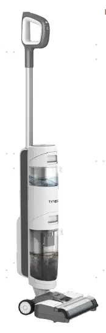
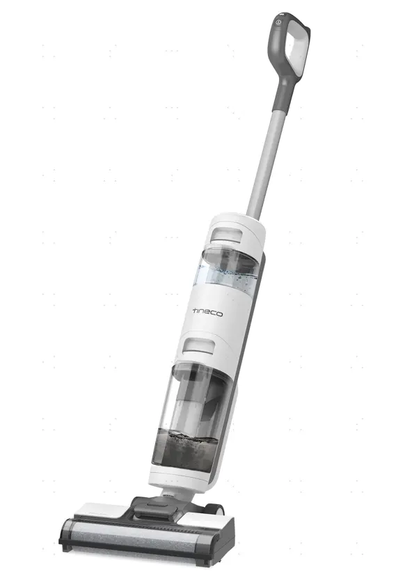
1. Tear down handle& Accessory 7
3. Tear down Main PCBA and Battery 9
4. Tear down Assy Brush Part（scraper/brush motor/micro switch/Pump/Repair wheel） 11
History
| No | Date | Comments | Version | ISSUE | Approve |
|---|---|---|---|---|---|
| 1 | 24.08.16 | First Draft | 1.0 | Qiu | |
Tools
Electric screwdriver\Long-nose pliers\Slotted screwdriver\Zip tie\Scissors
Repair notice
Important Safety Instructions:
1. Wear gloves when carrying out any repair work.
2. Ensure that there are no exposed electrical wires in the maintenance environment and strictly prohibit direct testing of the equipment with AC power to prevent electric shock.
3. When repairing electrical components, please disconnect the battery pack first.
Preparation:
Empty the clean water tank and dirty water tank before disassembly.
Replacement requirements:
1. All parts that have passed the cross-check must be removed from the faulty machine, fitted with the user's original adapter and then subjected to the next replacement test.
2. After repair, organise the removed old parts and unused parts.
Range of Product
| No | Product Name | Factory Serial Model | SKU | Remark |
|---|---|---|---|---|
| iFloor 3 Breeze | CL2011H-01 | FW041100RU | ||
| iFloor 3 Breeze | CL2011D-07 | FW040800TH | ||
| iFloor 3 Breeze Complete | CL2011A-02 | FW040500US | ||
| iFloor 3 Breeze | CL2011D-02 | FW040100UK | ||
| iFloor 3 Breeze | CL2011A-01 | FW040100US | ||
| iFloor 3 Breeze Plus | CL2011D-06 | FW040600EU | ||
| Ifloor 3 breeze | CL2011I-01 | FW041300SA |
Range of Spare Part
| No | Spare Part Name | Remark |
|---|---|---|
| Wire | Charging wire 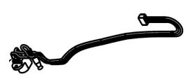 | |
| Motor | Brush roller Motor | |
| Brush Roller | ||
| Brush Roller Cover | ||
| Adapter | ||
| Charging Base | ||
| Battery | ||
| Motor | Main Motor | |
| PCBA | ||
| Scraper | ||
| Handle | ||
| Clean Water Tank | ||
| Dirt Water Tank |
Wiring diagram
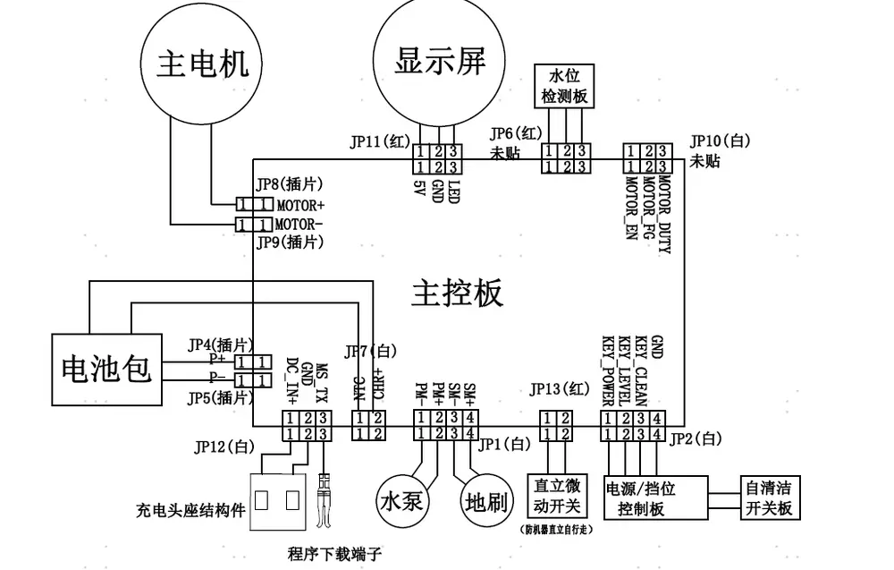
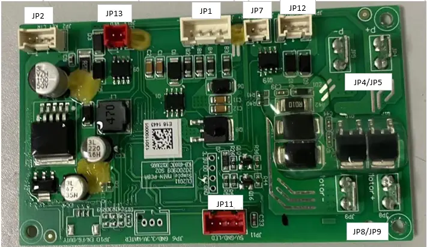
| JP12 | charging | JP2 | handle button |
|---|---|---|---|
| JP4/JP5 | battery | JP13 | micro switch |
| JP8/JP9 | Main Motor | JP1 | pump and brush roller motor |
| JP11 | Display indicator | JP7 | battery NTC |
Tear down Guide
Tear down handle& Accessory
Pull the handle up after holding according to photos as below

Disassembly all accessories
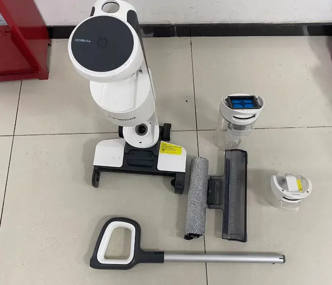
Tear down Display Screen
Clockwise rotation to teardown Display screen deco
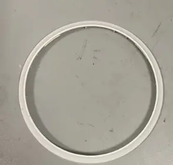
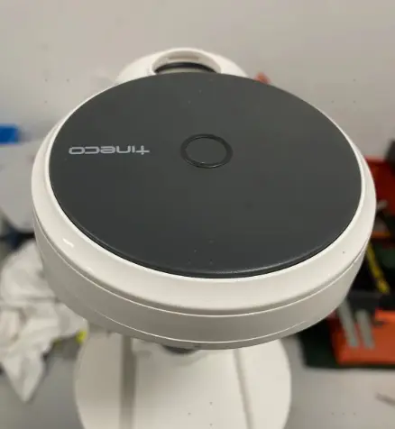
Remove screw and disassemble Body Cover Top（display screen）
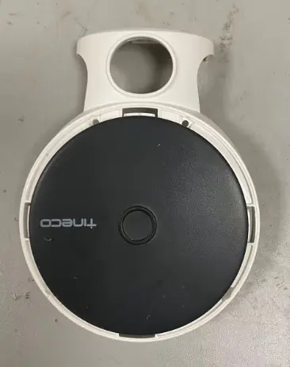
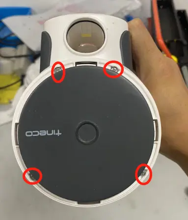
Tear down Main PCBA and Battery
Unscrew screws to disassemble the Body rear cover
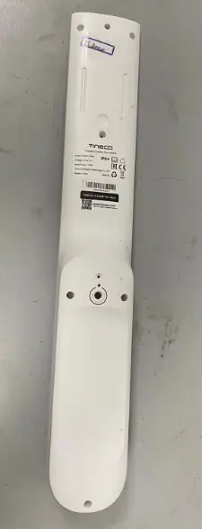
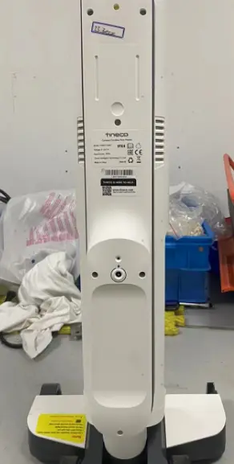
Unscrew screws to disassemble the Body middle cover
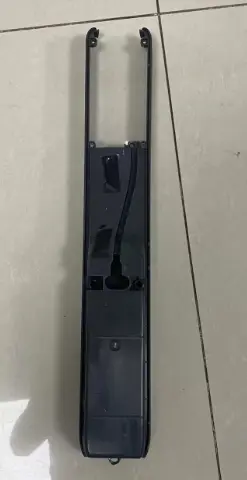
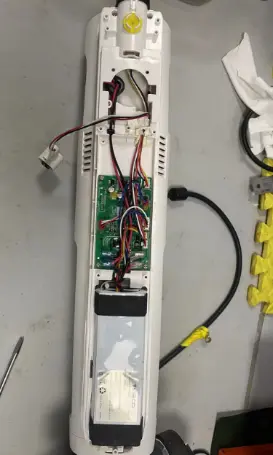
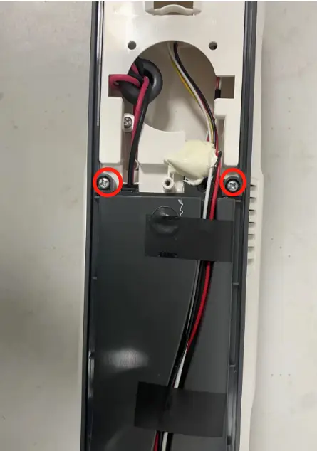
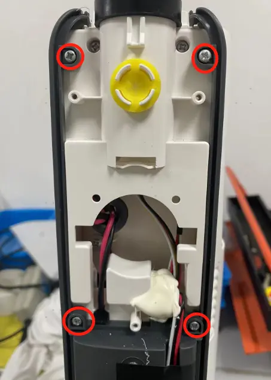
Unplug terminal to disassemble the charging wire
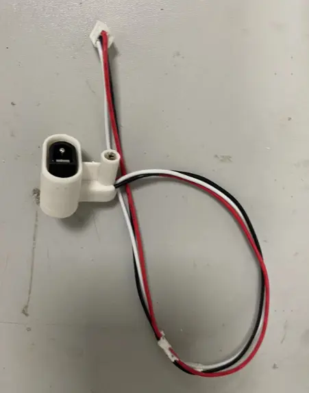
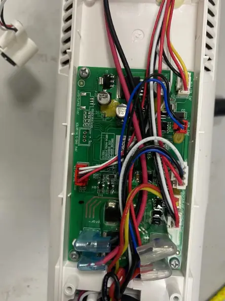
Unplug terminal to disassemble the Battery
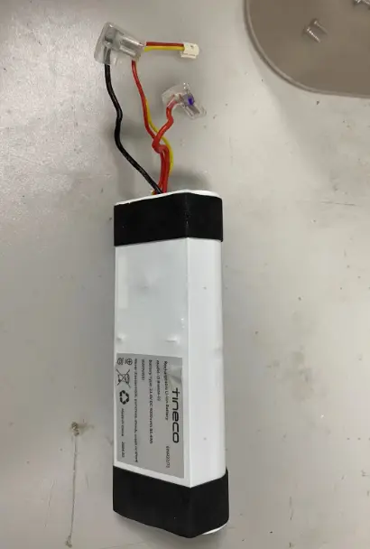
Unplug terminal and remove screws to disassemble the PCBA
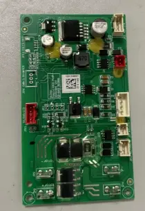
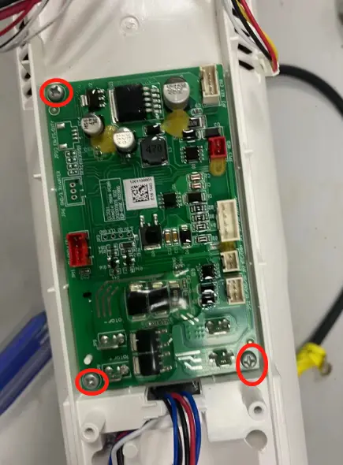
Tear down Assy Brush Part（scraper/brush motor/micro switch/Pump/Repair wheel）
Remove 4 screws to disassemble the Scraper
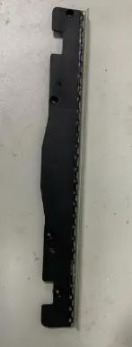
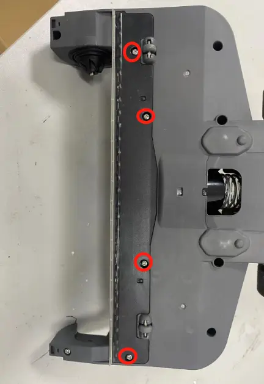
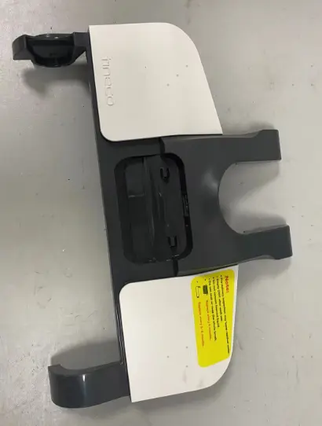
Unscrews screws to disassemble Assy brush cover
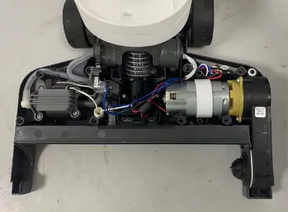
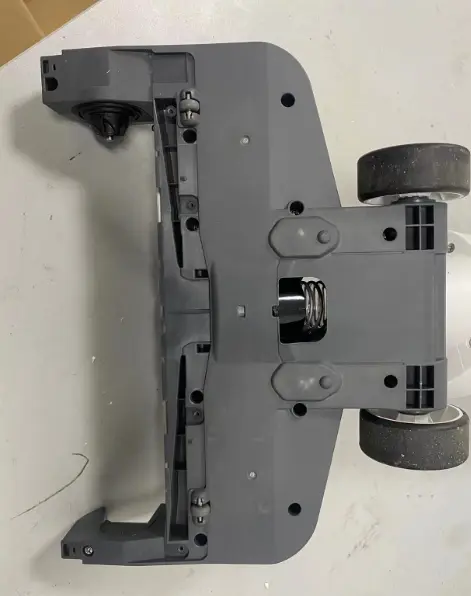
Unplug terminal to disassemble the brush roller motor
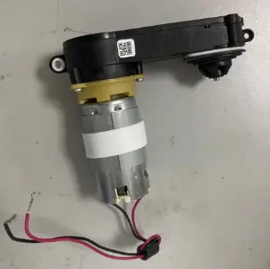
Unscrews screws to disassemble the micro switch
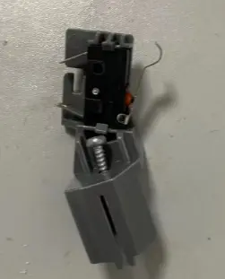
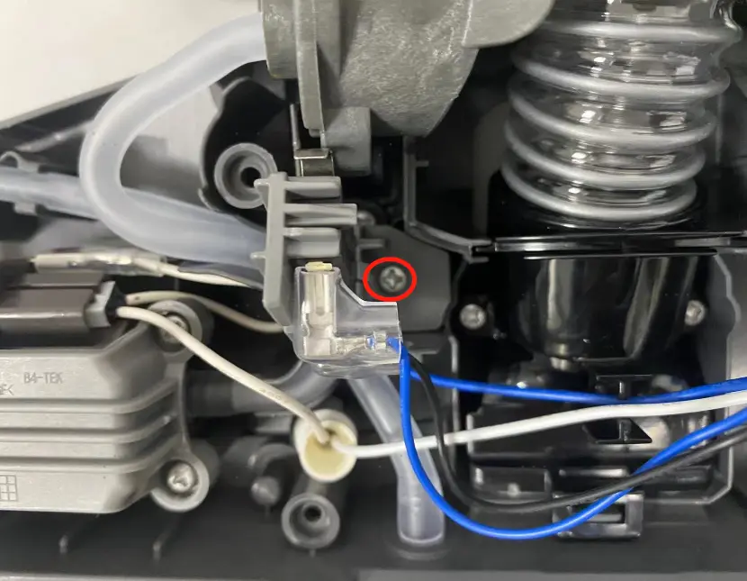
Unplug terminal to disassemble the Pump
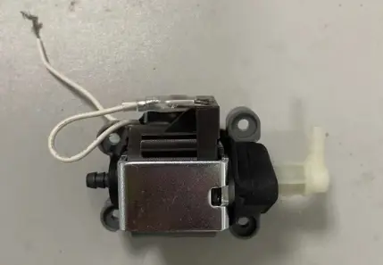
Unscrew screw to disassemble the repair wheel
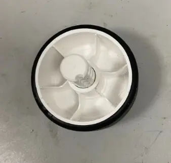
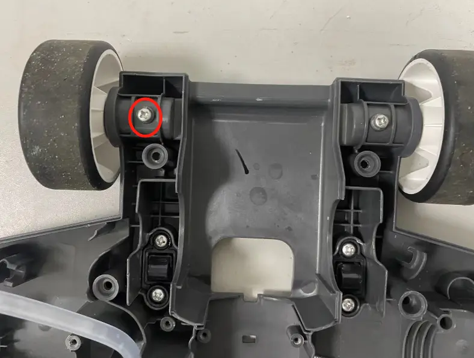
Tear down Main Motor
Refer to the steps 2.0~4.0 to disassemble part
Remove screws to disassemble the rotary union
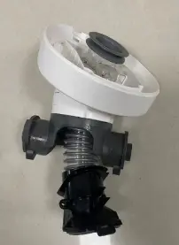
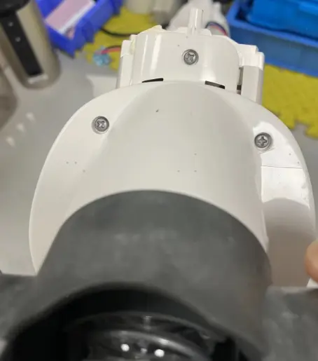
Remove 4 screws to disassemble the Assy housing part
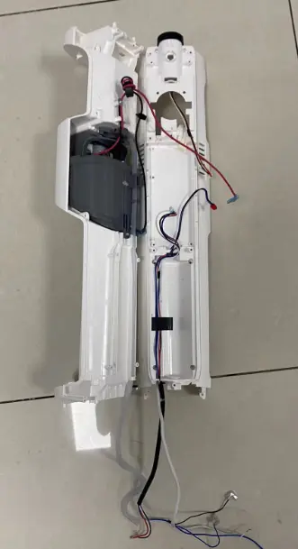
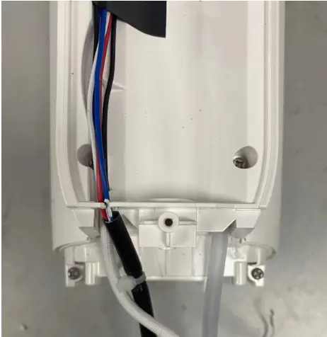
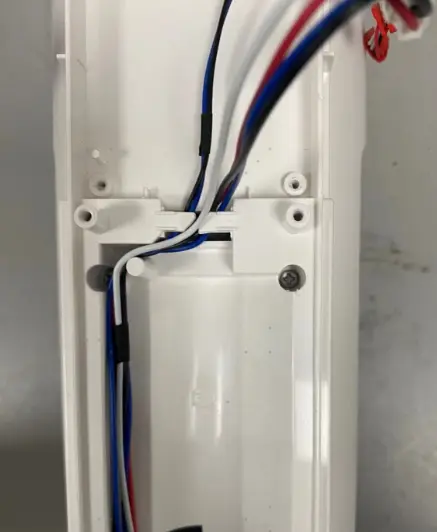
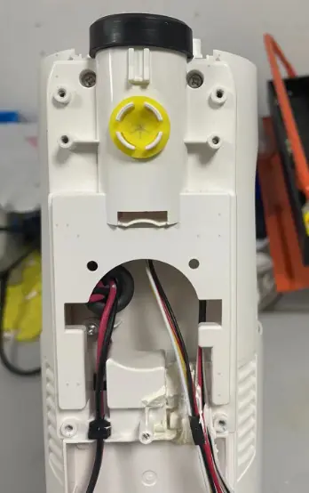
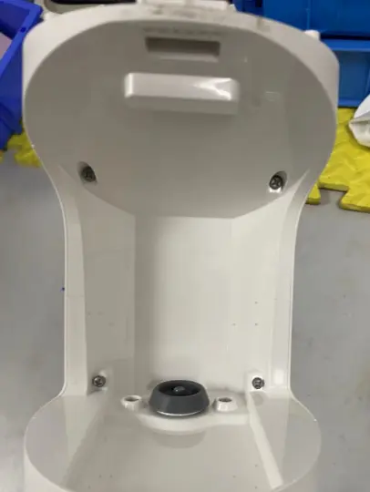
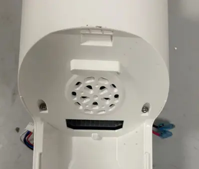
Remove screws to disassemble the Main Motor
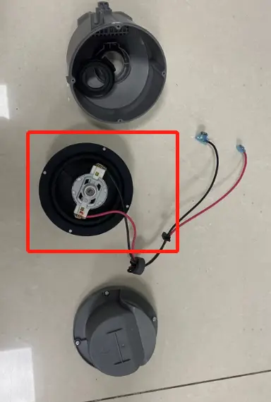
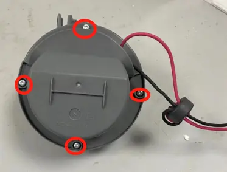
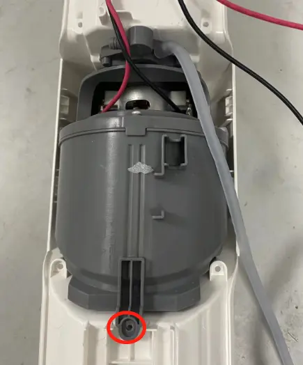
Repair Guide
| Failure System | Failure Phenomenon | No | Failure Mode | Repair Solution | Spare Parts |
|---|---|---|---|---|---|
| Water circulation system Failure | No/less spray water | CWT Failure | replace CWT | CWT | |
| spray hole blocked | clean spray hole | maintenance | |||
| Brush roller cover blocked | Clean or replace | Brush roller cover | |||
| CWT seal ring rubber Failure | replace CWT seal ring | CWT seal ring | |||
| pump Failure | replace pump | pump | |||
| main PCBA Failure | replace main PCBA | main PCBA | |||
| pipe blocked | replace water pipe | water pipe | |||
| pipe bent or broken | fix or replace pipe | water pipe | |||
| water level sensor blocked | replace water level sensor | water level sensor | |||
| leaking water | Debris channel /Air duct blocked | 1.Clean the debris channel blockage、debris wrapped around the brush roller 、suction nozzle blockage; 2.Dry and clean HEPA; 3.Empty and clean the DWT | maintenance | ||
| CWT leaking water | replace CWT | CWT | |||
| pump Failure | replace pump | pump | |||
| water level sensor broken | replace water level sensor | water level sensor | |||
| water pipe loose | Re-plug water pipe | water pipe | |||
| Sewage recovery pipe damaged | replace sewage recovery pipe | Rotary union | |||
| DWT broken | replace DWT | DWT | |||
| brush cover damaged | replace brush cover | brush roller cover | |||
| HEPA damaged | replace HEPA | HEPA | |||
| water pipe damage | replace water pipe | water pipe | |||
| no suck up water | Debris channel /Air duct blocked | 1.Clean the debris channel blockage、debris wrapped around the brush roller 、suction nozzle blockage; 2.Dry and clean HEPA; 3.Empty and clean the DWT | maintenance | ||
| HEPA not install properly | reinstall HEPA properly | maintenance | |||
| brush roller damage | replace brush roller | brush roller | |||
| Sewage recovery pipe damaged | replace sewage recovery pipe | Rotary union | |||
| Scraper damage | Replace scraper | Scraper | |||
| motor Failure | replace main motor | main motor | |||
| brush motor Failure | replace brush roller motor | brush roller motor | |||
| Charging system Failure | No response when charging | adapter Failure | replace adapter | adapter | |
| Charging wire damage | replace Charging wire | Charging wire | |||
| battery pack Failure | replace battery pack | battery pack | |||
| Main PCBA Failure | replace main PCBA | main PCBA | |||
| Charging indicator flashes several times and then goes off, then the machine stop charging | battery pack Failure | replace battery pack | battery pack | ||
| adapter Failure | replace adapter | adapter | |||
| Poor charging contact | adapter cosmetic damage | replace adapter | Adapter | ||
| Charging wire cosmetic damage | replace Charging wire | Charging wire | |||
| abnormal noise when in charging | adapter Failure | replace adapter | adapter | ||
| Main PCBA Failure | replace main PCBA | main PCBA | |||
| battery pack Failure | replace battery pack | battery pack | |||
| burn smell in main body when in charging | Main PCBA Failure | replace main PCBA | main PCBA | ||
| battery pack Failure | replace battery pack | battery pack | |||
| Burning smell when in charging | battery pack Failure | replace battery pack | battery pack | ||
| adapter Failure | replace adapter | adapter | |||
Turn on Failure
| turn on but no reaction , indicator not light up, also no reaction when charging | handle Failure | replace handle | handle | |
| battery pack Failure | replace battery pack | battery pack | |||
| Main PCBA Failure | replace main PCBA | main PCBA | |||
| After pressing the power button, the indicator lights up, but it doesn't work after releasing the micro switch. | Micro switch Failure | replace Micro switch Failure | Micro switch | ||
| Motor Failure | replace motor | Main motor | |||
| Main PCBA Failure | replace main PCBA | Main PCBA | |||
| stop running after several times and Solid red light | brush roller has a blockage or not installed. | Remove blocked and reinstall brush roller | maintenance | ||
| brush roller heavy wear | replace brush roller | brush roller | |||
| Brush roller motor failure | Replace brush roller motor | brush roller motor | |||
| mode switch Failure | switch mode but no reaction | handle Failure | replace handle | handle | |
| Main PCBA Failure | replace main PCBA | main PCBA | |||
| switch mode but auto power-off | Main PCBA Failure | replace main PCBA | main PCBA | ||
| battery pack Failure | replace battery pack | battery pack | |||
| motor Failure | replace motor | motor | |||
| abnormal noise | motor noise | motor Failure | replace main motor | main motor | |
| Noise comes from main body, but not from the motor | HEPA Failure | Replace HEPA | HEPA | ||
| brush noise | Brush roller blocked by debris | Clean the debris channel blockage、debris wrapped around the brush roller 、suction nozzle blockage; | maintenance | ||
| scraper has dirt buildup | clean the scraper | maintenance | |||
| brush roller heavy wear | replace brush roller | brush roller | |||
| The small wheel noisy | replace the repair wheel | repair wheel | |||
| Scraper broken | replace scraper | scraper | |||
| pump noise | pump noise | replace pump | pump | ||
| Rotary union noise | Rotary union Failure | replace Rotary union | Rotary union | ||
| Self-cleaning malfunction | Press and hold button for 3s,but no reaction | adapter Failure | replace adapter | adapter | |
| Charging wire Failure | replace Charging wire | Charging wire | |||
| battery pack Failure | replace battery pack | battery pack | |||
| Main PCBA Failure | replace main PCBA | main PCBA | |||
| self-cleaning cannot stop | Main PCBA Failure | replace main PCBA | main PCBA | ||
| Reminds water on charging base after self cleaning function | Debris channel /Air duct blocked | 1.Clean the debris channel blockage、debris wrapped around the brush roller 、suction nozzle blockage; 2.Dry and clean HEPA; 3.Empty and clean the DWT | maintenance | ||
| HEPA not install properly | reinstall HEPA properly | maintenance | |||
| Debris pipe damage | Replace Rotary union | Rotary union | |||
| brush roller heavy wear | replace brush roller | brush roller | |||
| water pipe damage | replace water pipe | water pipe | |||
| motor Failure | replace main motor | main motor | |||
| Main PCBA Failure | replace main PCBA | main PCBA | |||
| Brush roller not spinning | Brush roller stop spinning, and the machine indicator solid red | brush roller is blocked | clean brush roller | maintenance | |
| brush roller heavy wear | replace brush roller | brush roller | |||
| brush roller motor Failure | replace brush roller motor | brush roller motor | |||
| Main PCBA Failure | replace main PCBA | main PCBA |